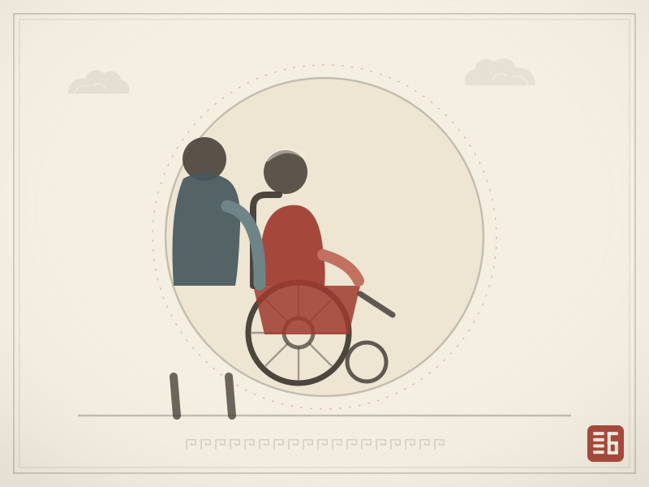
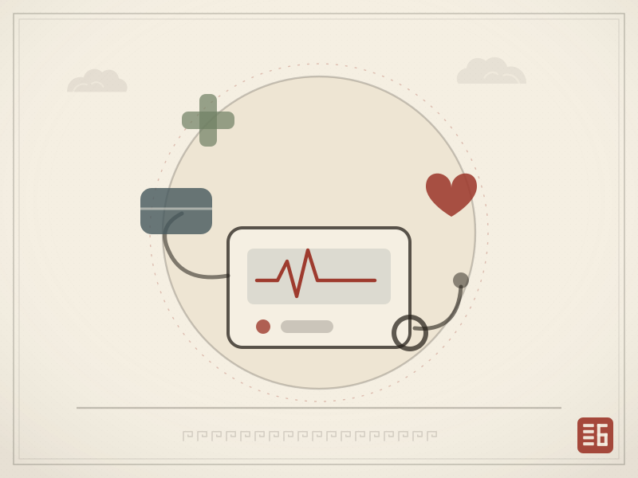
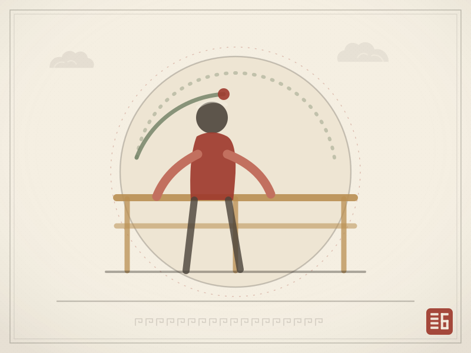
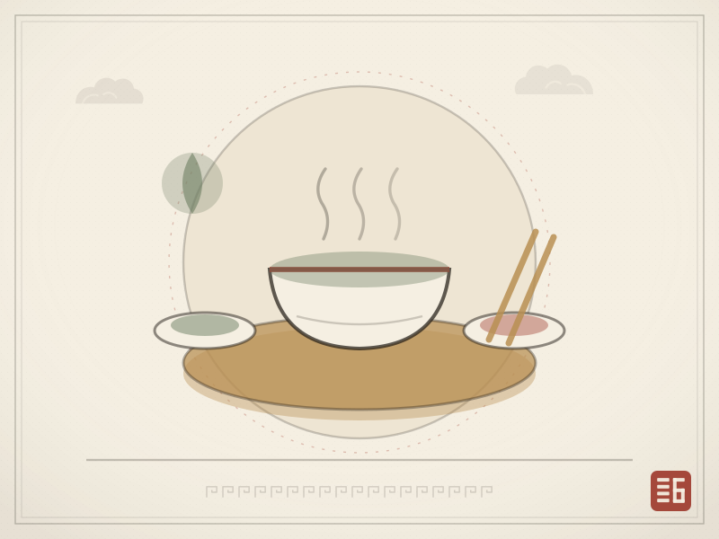
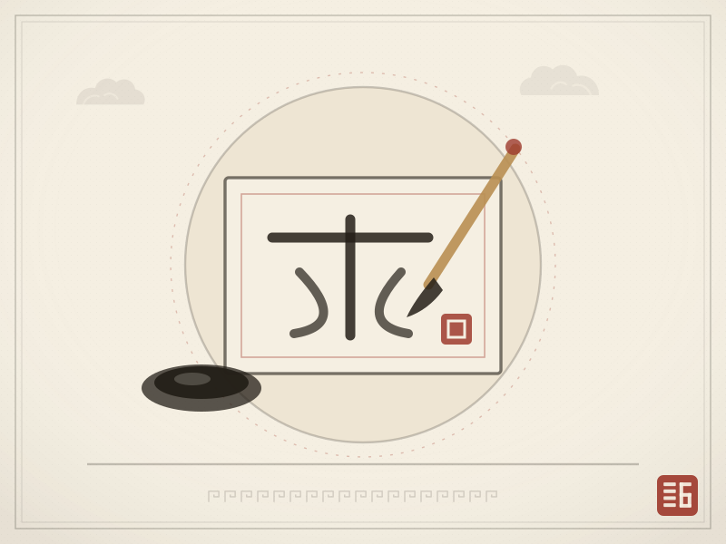
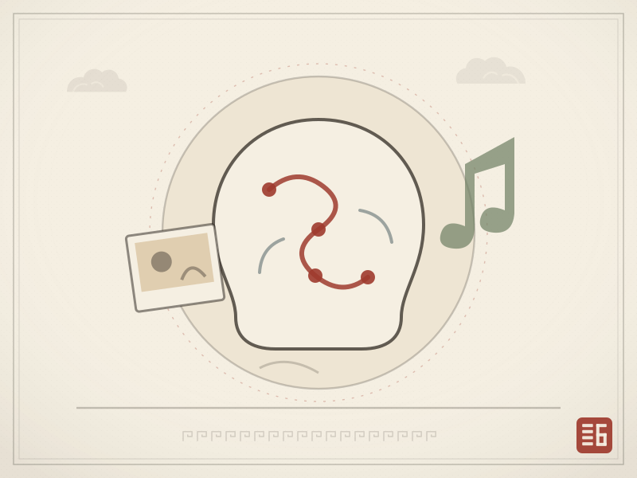

首页›服务内容
服务内容
六类服务，覆盖一天的每一个角落
从晨起洗漱到夜间巡房，从慢病管理到一餐一饭，照护被拆成可被看见的环节。

基础照护
生活照料
协助洗漱、穿衣、进食、如厕与移位，夜里也有巡房。按失能等级提供对应频次的服务，让基本生活有尊严。
- 24 小时值班与夜间巡房
- 个人卫生协助与居室清洁
- 防跌倒照护与移位辅助

医养结合
医疗护理
驻点医护每日查房、慢病管理、用药提醒与记录；与周边三甲医院建立绿色转诊通道，突发状况少一分慌乱。
- 体征监测与健康档案
- 用药管理、注射与管路护理
- 紧急救治与绿色通道

功能维持
康复理疗
针对术后、卒中及关节退化的长者，由康复师制定训练计划，延缓功能衰退，把日常能力留得久一点。
- 肢体功能与平衡训练
- 中医理疗与疼痛管理
- 认知训练与记忆活动

营养膳食
营养膳食
注册营养师配餐，软烂适口、低盐低糖；糖尿病、吞咽困难等特殊饮食单独制作，三餐两点按时供应。
- 个性化营养评估与食谱
- 慢病与吞咽适配餐食
- 节日餐与家乡口味复刻

精神关怀
精神文娱
银龄学堂、兴趣小组与节庆活动，让长者在写字、唱歌、手工与聚会里保持与社会、与自我的连接。
- 银龄学堂：书法、智能手机、合唱
- 节庆活动与三代同堂日
- 个案心理陪伴与倾诉支持

专区照护
认知症照护
独立认知症专区，非药物干预与怀旧疗法并行，用稳定的环境与节奏，减少焦躁、留住熟悉感。
- 专区封闭式安全动线
- 怀旧疗法与感官刺激
- 家属赋能与定期沟通